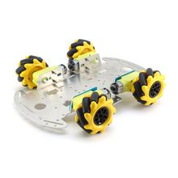

Шасси 4WD на всенаправленных колёсах (Mecanum)
МеханикаКатегория
Механика
Тип шасси
4WD, омнинаправленное
Тип колёс
Mecanum
Количество колёс
4 шт.
Количество приводов
4 независимых мотора
Тип движения
вперёд/назад, вбок, диагональ, поворот на месте
Принцип работы
суммирование векторов тяги от роликов под углом
Назначение
мобильная робототехническая платформа
Типовое применение
учебные роботы, AGV/AMR, DIY-робоплатформы
Кратко
Это 4-колёсное шасси с колёсами Меканум, позволяющее роботу двигаться не только вперёд/назад, но и вбок и по диагонали. Обычно используется в робототехнических платформах, где важна манёвренность в ограниченном пространстве.
Описание
Шасси Mecanum 4WD — это база мобильного робота с четырьмя независимо приводимыми колёсами особой конструкции. Ролики на колёсах расположены под углом, за счёт чего платформа может выполнять боковое смещение (strafe) без разворота корпуса. Такие шасси часто применяются в учебной робототехнике, FTC/FRC-проектах, тележках для навигации и в прототипах AGV/AMR. Конкретные размеры и совместимость зависят от выбранного комплекта, но сама схема остаётся одинаковой: 4 мотора, 4 mecanum-колеса и жёсткая рама.
Документация
REV Robotics: колёса DUO, включая MecanumAndyMark: MecanAM FTC ChassisAndyMark: 4 in. SD Mecanum Wheel — характеристики колеса
id hw-2026-115